Diffusion models and flow matching
Part A uses a pretrained DeepFloyd model for sampling, image-to-image editing, inpainting, visual anagrams, and hybrids. Part B trains a UNet from scratch on MNIST: first as a one-step denoiser, then with time and class conditioning for flow matching.
Part A. Diffusion models with DeepFloyd
Part 0. Prompt embeddings and setup
The prompts I used were: 'a high quality picture', 'an oil painting of a snowy mountain village', 'a photo of the amalfi coast', 'a photo of a man', 'a photo of a hipster barista', 'a photo of a dog', 'an oil painting of people around a campfire', 'an oil painting of an old man', 'a lithograph of waterfalls', 'a lithograph of a skull', 'a man wearing a hat', 'a high quality photo', 'a rocket ship', 'a pencil', 'a photo of a penguin', 'a photo of jungle animals playing poker', 'a cave painting of people playing video games', 'a roman sculpture of Lebron James with a crown', 'A Scifi Lunar civilization overlooking Earth', 'A photorealistic humanoid robot Hotel Concierge', 'A student with a shirt that says "BERKELEY CS" putting fries into a bag', 'An oil painting of a pirate', 'A wise mystical old man', and 'A wizard casting a spell'. The random seed I used was 189.
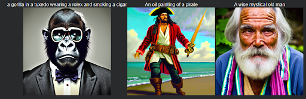
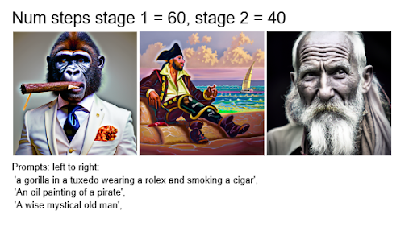
1.1. Implementing the forward process
The forward diffusion process takes a clean image $x_0$ and adds noise according to the specified variance schedule:
$$x_t = \sqrt{\bar{\alpha}_t}\, x_0 + \sqrt{1 - \bar{\alpha}_t}\, z$$
where $z \sim \mathcal{N}(0, I)$ is sampled Gaussian noise and $\bar{\alpha}_t$ is the cumulative product of the $\alpha$ values up to time $t$. In the forward(im, t) function, the implementation referenced the provided $\bar{\alpha}_t$ values stored in the alphas_cumprod tensor:
- Retrieve the required $\bar{\alpha}_t$ value by indexing:
alpha_t_bar = alphas_cumprod[t]. - Generate the Gaussian noise tensor $z$ with
torch.randn_like(im), matching the shape and device of the input image. - Apply the formula with tensor operations: $\text{noisy\_im} = \text{im} \cdot \sqrt{\bar{\alpha}_t} + z \cdot \sqrt{1 - \bar{\alpha}_t}$.
This function generated the noisy Campanile images at timesteps $t \in \{250, 500, 750\}$.
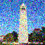
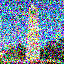
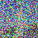
1.2. Classical denoising with Gaussian blur
Classical denoising was performed by applying a Gaussian blur to the noisy images from 1.1. This highlights the limitations of classical methods for removing heavy Gaussian noise.
The implementation used torchvision.transforms.functional.gaussian_blur. For each noisy image $x_t$ (at $t \in \{250, 500, 750\}$), I experimented with different kernel_size and sigma values to get the best possible result despite the expected poor performance; for example, kernel_size=5 and sigma=2.0. Blurring removes high-frequency noise but also destroys image detail and fails to recover the underlying clean structure, especially at high noise levels ($t = 750$).
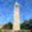
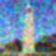
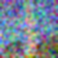
1.3. One-step denoising
This section uses the pretrained DeepFloyd UNet denoiser (stage_1.unet) to estimate and remove noise in a single step, using the prompt embedding for "a high quality photo".
Given a noisy image $x_t$ and timestep $t$, the UNet predicts the noise $\epsilon_{\theta}(x_t, t, c)$. The clean image estimate $\hat{x}_0$ follows from the forward process (Equation A.2):
$$\hat{x}_0 = \frac{1}{\sqrt{\bar{\alpha}_t}} \left( x_t - \sqrt{1 - \bar{\alpha}_t}\, \epsilon_{\theta} \right)$$
- $x_t$ and $t$ were moved to the GPU and converted to half precision.
- The UNet was called:
output = stage_1.unet(x_t, t, encoder_hidden_states=prompt_embeds, return_dict=False)[0]. - The noise estimate was taken from the first three channels of the output:
noise_pred = output[:, :3, :, :]. - $\hat{x}_0$ was computed with the formula above.
This gave significantly better results than Gaussian blurring, validating the power of the learned denoiser. All calculations were wrapped in torch.no_grad() to save memory.
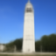
1.4. Iterative denoising
Iterative denoising uses a schedule of accelerated timesteps to denoise a noisy image over multiple steps.
Timestep construction. I first created strided_timesteps, starting at 990 and decreasing with a stride of 30 until 0 (990, 960, 930, ..., 30, 0). The DeepFloyd scheduler was initialized with these steps: stage_1.scheduler.set_timesteps(timesteps=strided_timesteps).
iterative_denoise(im_noisy, i_start). This function loops from the starting index i_start. For each step $i \rightarrow i+1$ (from more noisy $t$ to less noisy $t'$), the UNet predicts the noise $\epsilon_{\theta}$, and the next state $x_{t'}$ is computed with the DDIM formula:
$$x_{t'} = \sqrt{\bar{\alpha}_{t'}}\, \hat{x}_0 + \sqrt{1 - \bar{\alpha}_{t'} - \sigma_t^2}\, \epsilon_{\theta} + \sigma_t z$$
The $\hat{x}_0$ estimate is derived from the noise prediction, and the $\sigma_t z$ term (stochasticity, or variance) is handled by the provided add_variance utility using the predicted variance channels from the UNet output. Applied iteratively this produces a high-quality clean image, demonstrating the stability of DDIM-style sampling over the single-step method.
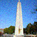
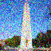
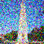
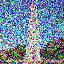
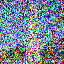
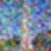
1.5. Diffusion model sampling
Image generation from scratch was achieved by starting iterative_denoise from pure Gaussian noise with i_start = 0 (the index of the largest timestep).
- Initialization: a noise tensor $x_T$ of shape $(1, 3, 64, 64)$ was created with
torch.randnand moved to the correct device and dtype. - Execution:
iterative_denoisewas called with this noise and the starting index for the largest timestep instrided_timesteps. - Conditioning: the text prompt embedding for "a high quality photo" was the single conditioning input to the UNet at each step.
While functional, the resulting images were of moderate quality, which leads directly to the need for classifier-free guidance in the next section.
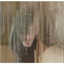
1.6. Classifier-free guidance
Classifier-free guidance (CFG) was implemented in iterative_denoise_cfg to strengthen the alignment between the generated image and the text prompt. At each step $t$:
- The UNet was run twice: a conditional run with the prompt embedding $c$, $\epsilon_c = \text{UNet}(x_t, t, c)$, and an unconditional run with the null prompt embedding, $\epsilon_\emptyset = \text{UNet}(x_t, t, \emptyset)$.
- The guided noise estimate was computed with scale $s = 7.0$: $$\tilde{\epsilon} = \epsilon_{\emptyset} + s \cdot (\epsilon_{c} - \epsilon_{\emptyset})$$
- $\tilde{\epsilon}$ was then used in the DDIM sampling equation from 1.4 to compute $x_{t'}$. The conditional variance channels (from the $\epsilon_c$ output) were used with
add_variance.
The resulting samples for "a high quality photo" show significantly improved quality and coherence compared to the unconditional samples from 1.5.
1.7. Image-to-image translation (SDEdit)
SDEdit combines the forward process (1.1) with the iterative_denoise_cfg sampler (1.6). It allows semantic editing while preserving the low-frequency structure of the input image:
- Apply noise to the input image $x_0$ with
forward(x_0, t_start)to obtain $x_{t_{\text{start}}}$. The starting timestep is determined by thei_startindex (for example, $i\_start = 10$ corresponds to $t_{\text{start}} = 990 - 10 \times 30 = 690$). - Pass $x_{t_{\text{start}}}$ into
iterative_denoise_cfg, running the reverse process from $t_{\text{start}}$ down to $t = 0$.
By varying $t_{\text{start}}$ (from low indices like 1 to high indices like 20), the results show the trade-off between preservation (low $t_{\text{start}}$) and creative change (high $t_{\text{start}}$) for the Campanile, web, and hand-drawn images. The conditional prompt, such as "a high quality photo" or a custom description, guides the hallucinated details.
Campanile, noise levels i_start = 1, 3, 5, 7, 10, 20

Golden Gate Bridge sketch
Salesforce Tower
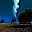
1.7.1. Editing hand-drawn and web images
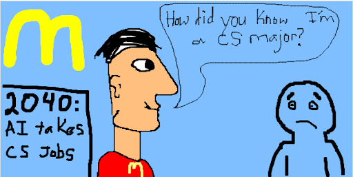
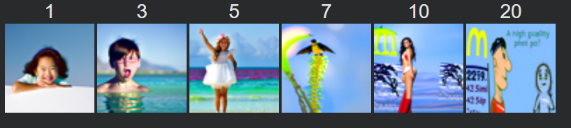
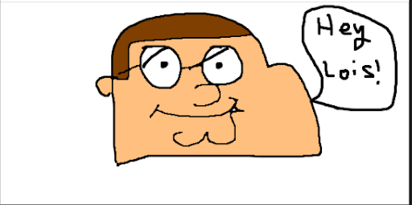
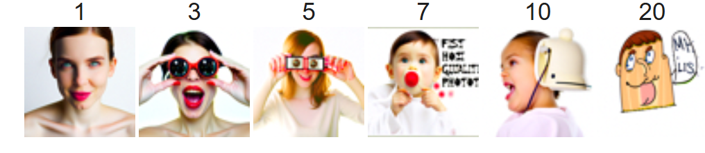
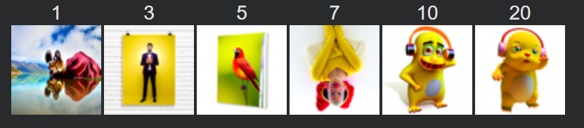
1.7.2. Inpainting (RePaint)
Inpainting modifies iterative_denoise_cfg to apply the mask constraint at every step, following the RePaint method:
- The input image $x_0$ is converted into a noisy starting image $x_{t_{\text{start}}}$ with
forward. The original image is also diffused to all intermediate timesteps $x_{t'}$ for reference. - Inside the denoising loop, after computing the model's new sample $x_{t'}^{\text{model}}$ (the output of the DDIM step), the final $x_{t'}$ blends the model's prediction in the masked area with the original image's diffused content elsewhere: $$x_{t'} = M \odot x_{t'}^{\text{model}} + (1 - M) \odot \text{forward}(x_0, t')$$
- The mask $M$ was inverted so the model's prediction fills the hole (where $M = 1$) while known content is copied from the noisy original (where $M = 0$).
This ensures the model only generates content where the mask is active, using the surrounding context for guidance.
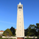
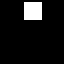
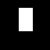
1.7.3. Text-conditional image-to-image translation
A direct extension of SDEdit, using a creative, descriptive prompt (for example turning the Campanile into a rocket ship) instead of the weak "a high quality photo". The implementation reused iterative_denoise_cfg exactly, with the only change being the conditional prompt embedding $c$. CFG guides the generation toward the text, while the starting noise level $t_{\text{start}}$ still dictates how much of the original structure is retained. Higher noise levels transformed the Campanile's structure into a rocket silhouette while keeping its spatial position.
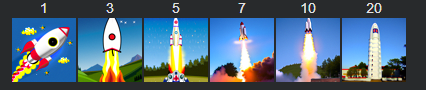
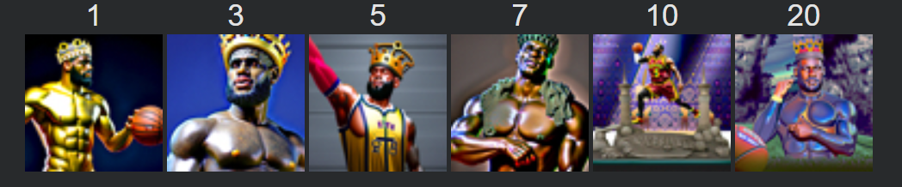
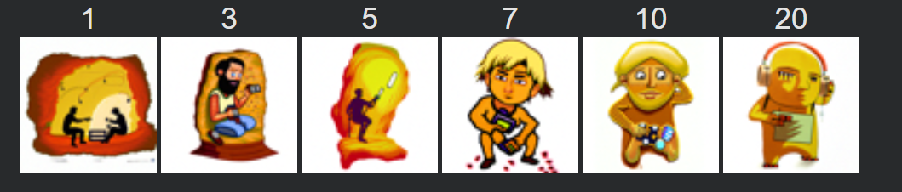
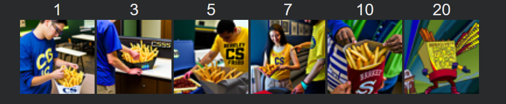
1.8. Visual anagrams
The visual_anagrams function creates images that turn into a different image when flipped upside down. This required modifying the noise prediction step to average two distinct conditional predictions. Inside the denoising loop:
- Compute the conditional noise $\epsilon_{c_1}$ from the current noisy image $x_t$ and the first prompt embedding $c_1$ (for example "old man").
- Flip $x_t$ upside down with
torch.flip(x_t, dims=[2, 3])to get $x_t^{\text{flip}}$. - Compute the conditional noise $\epsilon_{c_2}$ from $x_t^{\text{flip}}$ and the second prompt embedding $c_2$ (for example "campfire").
- Flip $\epsilon_{c_2}$ back to the original orientation: $\epsilon_{c_2}^{\text{flip}} = \text{flip}(\epsilon_{c_2})$.
- Average the noise estimates: $\tilde{\epsilon} = 0.5 \cdot (\epsilon_{c_1} + \epsilon_{c_2}^{\text{flip}})$.
- Use $\tilde{\epsilon}$ in the DDIM reverse step to compute $x_{t'}$.
This averaging forces the final image to satisfy both prompts simultaneously in their respective orientations. Each illusion below flips upside down when you hover over it.
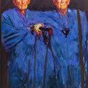
1.9. Hybrid images (factorized diffusion)
The make_hybrids function uses factorized diffusion to create hybrid images that show different content depending on viewing distance, combining the low frequencies of one prompt with the high frequencies of another. Inside the denoising loop:
- Compute two conditional noise estimates, $\epsilon_{c_1}$ (for example "skull") and $\epsilon_{c_2}$ (for example "waterfall"), from their prompt embeddings.
- Low-pass $\epsilon_{c_1}$ with a Gaussian blur: $\epsilon_{\text{low}} = \text{GaussianBlur}(\epsilon_{c_1})$, using kernel size 33 and $\sigma = 2$ via
torchvision.transforms.functional.gaussian_blur. - High-pass $\epsilon_{c_2}$: $\epsilon_{\text{high}} = \epsilon_{c_2} - \text{GaussianBlur}(\epsilon_{c_2})$.
- Average: $\tilde{\epsilon} = 0.5 \cdot (\epsilon_{\text{low}} + \epsilon_{\text{high}})$.
- Use $\tilde{\epsilon}$ in the DDIM reverse step to compute $x_{t'}$.
The final sample carries the low-frequency structure of the first prompt and the high-frequency texture of the second.
Part B. Flow matching from scratch
1.1. Implementing the UNet
The UNet was implemented from scratch in PyTorch, following the structure in Figure 1 of the assignment: downsampling, upsampling, and skip connections. The model comprises an encoder (downsampling path), a bottleneck, and a decoder (upsampling path):
- Conv blocks (Conv, DownConv, UpConv): sequences of
nn.Conv2d,nn.BatchNorm2d, andnn.GELU. Downsampling uses stride 2 inDownConv(or an explicitnn.AvgPool2dfollowed by convolution).UpConvusesnn.ConvTranspose2dwith stride 2 to reverse the downsampling. - Skip connections: feature maps from the downsampling path are stored and later concatenated channel-wise (
torch.cat) with the corresponding upsampled feature maps in the decoder, which is crucial for retaining spatial detail. - Flatten and unflatten: the deepest part of the network uses
nn.AvgPool2d(kernel_size=7)to flatten and a finalnn.ConvTranspose2dto unflatten, handling the $28 \times 28$ input as it reduces to $7 \times 7$ after two downsampling steps ($28 \rightarrow 14 \rightarrow 7$).
Input and output channels are 1 for grayscale MNIST, with hidden dimension $D = 128$ controlling the network's capacity.
1.2. Using the UNet to train a denoiser
1.2.1. Training
The objective was to train the UNet $f_{\theta}(x_t)$ to predict the clean image $x_0$ from a noisy sample $x_t$, minimizing the L2 loss $\mathcal{L} = \| f_{\theta}(x_t) - x_0 \|^2$.
Data and noising. The MNIST training set was loaded with torchvision.datasets.MNIST. The noising was done inside the training loop so a fresh noise sample $z$ was applied to $x_0$ for every batch: $x_t = x_0 + \sigma z$, with $\sigma$ fixed at $0.5$ for this part and $z \sim \mathcal{N}(0, I)$.
- The UNet was initialized with $D = 128$ and trained with
nn.MSELoss(). - Adam with learning rate $10^{-4}$.
- For each batch $(x_0, \text{labels})$: compute $x_t$ by adding noise $z$ scaled by $\sigma = 0.5$.
- The UNet predicts the clean image $\hat{x}_0 = \text{UNet}(x_t)$ and the loss is $\text{MSE}(\hat{x}_0, x_0)$, followed by standard backpropagation.
The training loss decreased consistently over 5 epochs, and samples after 5 epochs showed reasonable recovery of digit shapes from the $\sigma = 0.5$ noisy inputs.
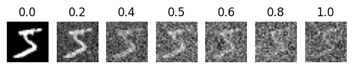
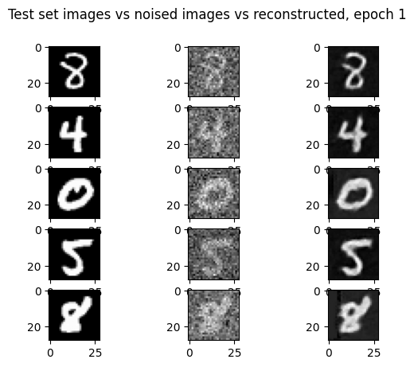
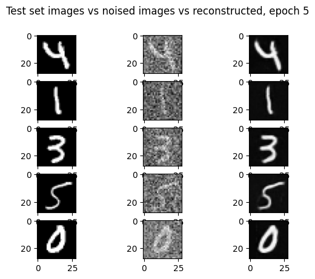
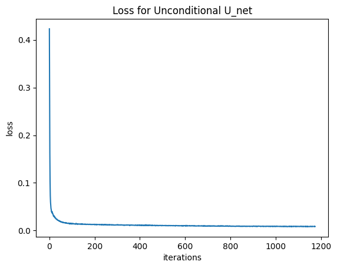
1.2.2. Out-of-distribution testing
After training the $\sigma = 0.5$ denoiser, its robustness was tested on noise levels $\sigma \in [0.1, 0.9]$. The denoiser performed well near its training distribution ($\sigma$ from about 0.4 to 0.6). For very low noise ($\sigma = 0.1$) the output kept a slight blur, since the model was trained to over-denoise. For very high noise ($\sigma = 0.9$) the output became severely corrupted or blurred, showing the limits of a single-step denoiser trained for one noise level.
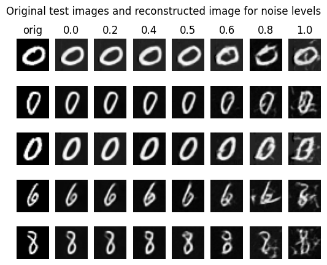
1.2.3. Denoising pure noise
To attempt image generation, the UNet was retrained to denoise pure noise ($\sigma \rightarrow \infty$) to a clean image $x_0$, implemented by setting $x_t = z$ in the training loop so the network maps $z \sim \mathcal{N}(0, I)$ directly to $x_0$.
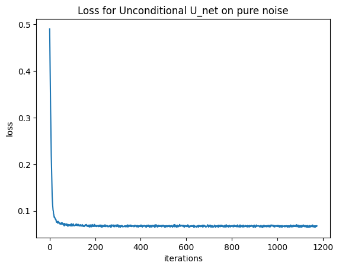
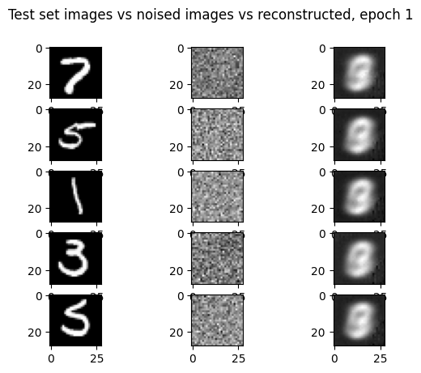
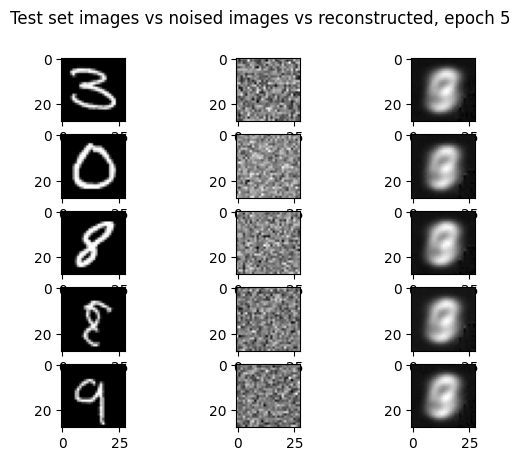
All of the outputs look like a blend of every possible digit. This is a direct consequence of the MSE loss: it drives the model to predict the conditional mean of the data distribution. When the input is pure noise, the model cannot condition its output on any specific digit class, so its optimal prediction converges to the global mean of the MNIST dataset, the "average digit". The generated outputs were blurry, centrally located gray shapes that vaguely captured the average structure of a digit.
2.1. Adding time conditioning to the UNet
To enable iterative flow matching, the UNet was modified to accept the scalar timestep $t \in [0, 1]$ as an input.
FCBlock. This helper is nn.Linear(F_in, F_out), GELU, and another linear layer, as suggested by Figure 5.
Time injection. The scalar $t$ (normalized to $[0, 1]$) is processed by two FCBlocks (fc1_t and fc2_t) to produce modulation vectors $t_1$ and $t_2$, which are broadcast-multiplied into the UNet's feature maps:
- Unflatten modulation: the feature map before the final upsampling is scaled by $t_1$:
unflatten = unflatten * t1. - Up1 modulation: the feature map after the first upsampling block is scaled by $t_2$:
up1 = up1 * t2.
This conditions the convolutional features on the current timestep, letting the UNet $v_{\theta}(x_t, t)$ learn the time-dependent flow field.
2.2. Training the flow matching UNet
The UNet was trained to predict the flow field $v_t$ from the noisy sample $x_t$ to the clean sample $x_0$, with objective $\mathcal{L} = \| v_{\theta}(x_t, t) - v_t(x_t) \|^2$. The target flow is defined by the straight path
$$v_t(x_t) = \frac{d x_t}{d t} = \frac{d}{d t} \big( (1 - t) z + t x_0 \big) = x_0 - z$$
where $x_t = (1 - t) z + t x_0$ and $z \sim \mathcal{N}(0, I)$.
- Model $D = 64$, batch size 64, Adam with learning rate $10^{-2}$.
- For each batch $(x_0, \text{labels})$: sample $t \sim \mathcal{U}[0, 1]$ and $z \sim \mathcal{N}(0, I)$; compute $x_t = (1 - t) z + t x_0$; the target flow is $v_t = x_0 - z$; the prediction is $\hat{v}_t = \text{UNet}(x_t, t)$; the loss is $\text{MSE}(\hat{v}_t, v_t)$.
- An
ExponentialLRscheduler with $\gamma = 0.995$ was stepped after every epoch to gradually reduce the learning rate.
The loss curve showed a stable, steady decrease as the model learned the time-dependent velocity field.
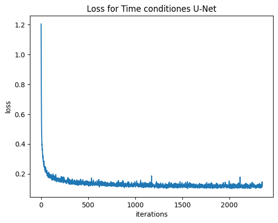
2.3. Sampling from the time-conditioned UNet
Sampling uses the trained UNet iteratively to solve the probability flow ODE (Algorithm B.2). Starting from pure noise $x_0 = z \sim \mathcal{N}(0, I)$, we step through $N = 50$ discrete timesteps, estimating the next state from the model-predicted flow:
$$x_{i+1} = x_i + \hat{v}_{\theta}(x_i, t_i) \cdot \Delta t$$
This moves the sample along the predicted velocity field toward $x_{\text{final}}$. The results after 10 epochs showed legible but often still noisy or blurry digits, confirming the model learned the basic flow but needed further refinement or conditioning.
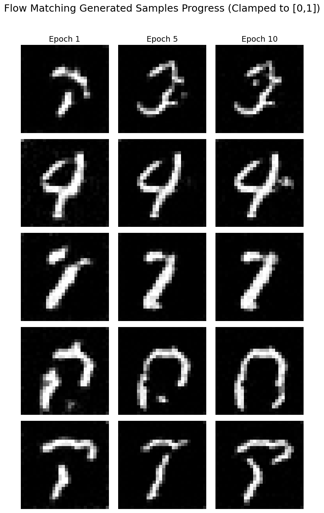
2.4. Adding class conditioning to the UNet
To improve generation quality and control, the UNet was further conditioned on the target digit class $c \in \{0, \dots, 9\}$, converted to a one-hot vector before the class FCBlocks.
Conditional injection. Two sets of FCBlocks were used: $(\text{fc1\_t}, \text{fc2\_t})$ for time and $(\text{fc1\_c}, \text{fc2\_c})$ for class. The time modulation $(t_1, t_2)$ and class modulation $(c_1, c_2)$ combine multiplicatively and additively with the feature maps:
- Unflatten modulation:
unflatten = c1 * unflatten + t1 - Up1 modulation:
up1 = c2 * up1 + t2
Unconditional training. To enable classifier-free guidance at sampling time, the class vector $c$ was set to 0 with probability $\rho = 0.1$ during training, so the model also learns to predict the flow unconditionally.
2.5. Training the class-conditioned UNet
Training followed the same flow matching algorithm as 2.2, with the class conditioning and the dropout mechanism added (Algorithm B.3). Class conditioning allowed faster convergence and higher-quality results. The loss curve showed a similar stable decay but reached a lower final loss than the time-only model, indicating a more precise fit to the data distribution.
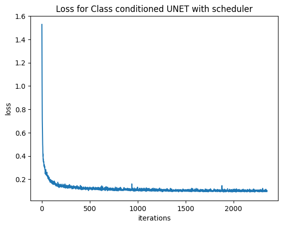
2.6. Sampling with classifier-free guidance
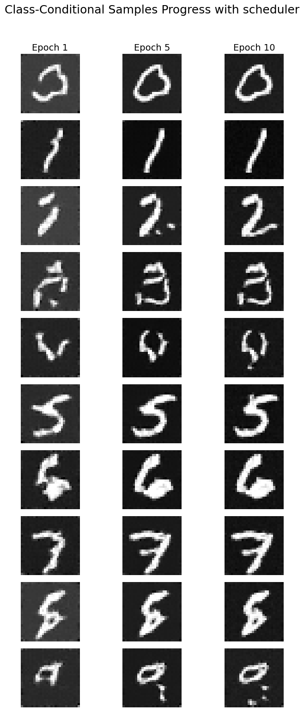
Without the learning-rate scheduler
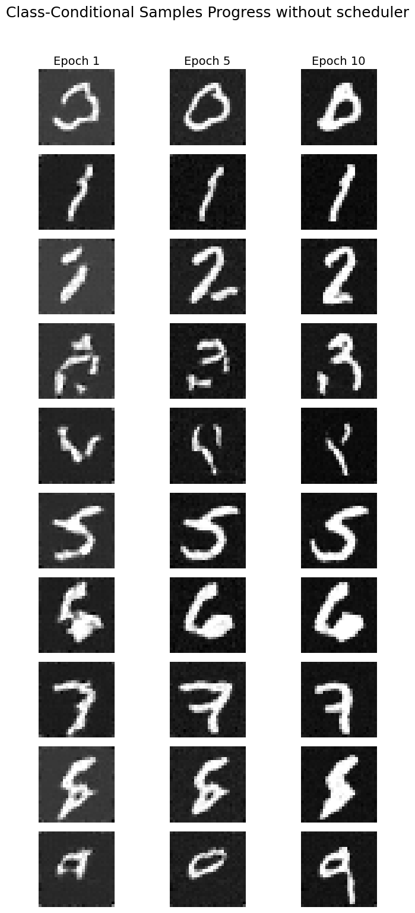
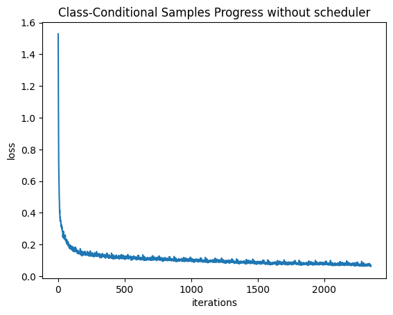
When I removed the learning-rate scheduler, I also switched the optimizer from Adam to AdamW and reduced the learning rate by a factor of 10. Without scheduling, the model no longer benefits from gradual learning-rate decay, which normally stabilizes late-stage training. AdamW helps counterbalance this by decoupling weight decay from the gradient updates, preventing parameter drift and reducing overfitting. Lowering the learning rate compensates for the absence of warmup and decay, making the optimization steps less volatile.
Thank you for viewing my project.